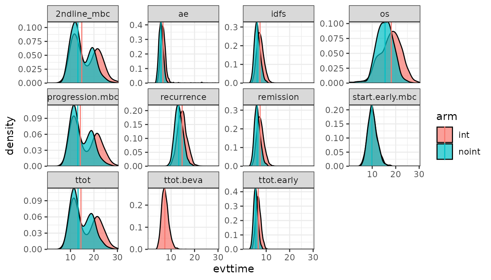
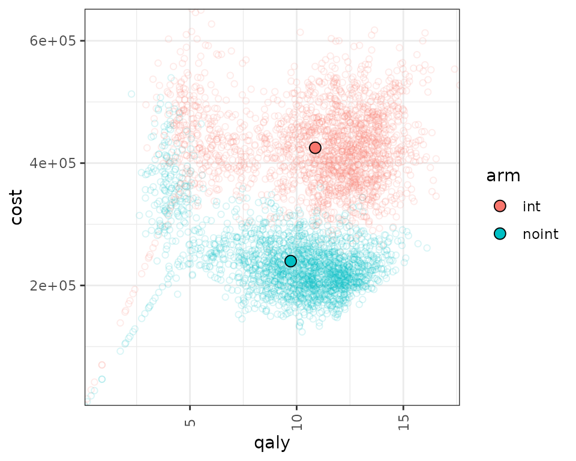

Example in Early Breast Cancer
Javier Sanchez Alvarez and Valerie Aponte Ribero
June 09, 2025
Source:vignettes/articles/example_eBC.Rmd
example_eBC.RmdIntroduction
This document runs a discrete event simulation model in the context of early breast cancer to show how the functions can be used to generate a model in only a few steps.
When running a DES, it’s important to consider speed. Simulation based models can be computationally expensive, which means that using efficient coding can have a substantial impact on performance.
Main options
library(WARDEN)
library(purrr)
library(dplyr)
#>
#> Attaching package: 'dplyr'
#> The following objects are masked from 'package:stats':
#>
#> filter, lag
#> The following objects are masked from 'package:base':
#>
#> intersect, setdiff, setequal, union
library(ggplot2)
library(kableExtra)
#>
#> Attaching package: 'kableExtra'
#> The following object is masked from 'package:dplyr':
#>
#> group_rowsModel Concept
Patients start in early breast cancer, and draw times to event. Patients also draw a probability of going into metastatic breast cancer or going into remission. If they go into remission, they can have a metastatic recurrence. At any point in time they can die, depending on the risk of each disease stage.
Load Data
The dummy data for costs and utility is generated below.
#Utilities
df_util <- data.frame( name = c("util.idfs.ontx" ,"util.idfs.offtx" ,"util.remission" ,"util.recurrence" ,"util.mbc.progression.mbc" ,"util.mbc.pps"),
value = c(0.75, 0.8,0.9,0.7,0.6,0.5),
se=rep(0.02,6),
stringsAsFactors = FALSE
)
#Costs
df_cost <- data.frame( name = c("cost.idfs.tx" ,"cost.recurrence" ,"cost.mbc.tx" ,"cost.tx.beva" ,"cost.idfs.txnoint",
"cost.idfs","cost.mbc.progression.mbc","cost.mbc.pps","cost.2ndline","cost.ae"),
value = c(40000,5000,3000,10000,30000,
10000,20000,30000,20000,1000),
stringsAsFactors = FALSE
) %>%
mutate(se= value/5)General inputs with delayed execution
Initial inputs and flags that will be used in the model can be
defined below. We can define inputs that are common to all patients
(common_all_inputs) within a simulation, inputs that are
unique to a patient independently of the treatment (e.g. natural death,
defined in common_pt_inputs), and inputs that are unique to
that patient and that treatment (unique_pt_inputs). Items
can be included through the add_item function, and can be
used in subsequent items (e.g. below, we define sex_pt and
we use it in nat.os.s to get the background mortality for
that patient). All these inputs are generated before the events and the
reaction to events are executed. Furthermore, the program first executes
common_all_inputs, then common_pt_inputs and
then unique_pt_inputs. So one could use the items generated
in common_all_inputs in unique_pt_inputs.
The flag fl.remission is drawn using a Bernoulli
distribution with probability 0.8. This means that 80% of the patients
will have a remission, while 20% will go into early metastatic BC. Note
that this could also be modeled differently by using a time to remission
and time to early metastatic BC, comparing these and choosing the
pathway depending on which one is smaller.
We also define here the specific utilities and costs that will be
used in the model. It is strongly recommended to assign unnamed objects
if they are going to be processed in the model. In this case, this is
not affected. However, keeping the name when extracting a value
e.g. util.remission (e.g. using one bracket instead of two
in util_v[["util.remission"]]) may cause the outputs from
the model to change names, depending on use. This is because of how R
works: it would correspond to a named list with a named vector/element,
which R concatenates, so in this case it could end up generating
qaly.util.remission as an output of the model instead of
just qaly). However this is unlikely to occur most of the
times, and if the inputs are intermediary (i.e., not utilities/costs
that appear in ongoing_inputs and such), it would cause no
trouble.
#Each patient is identified through "i"
#Items used in the model should be unnamed numeric/vectors! otherwise if they are processed by model it can lead to strangely named outcomes
#In this case, util_v is a named vector, but it's not processed by the model. We extract unnamed numerics from it.
#Put objects here that do not change on any patient or intervention loop
common_all_inputs <- add_item2(input={
#utilities
pick_val_v(
base = df_util$value,
psa = MASS::mvrnorm(1,df_util$value,diag(df_util$se^2)),
sens = df_util$value,
psa_ind = psa_bool,
sens_ind = sensitivity_bool,
indicator = rep(0, nrow(df_util)),
names_out =df_util$name,
deploy_env=TRUE
)
#costs
pick_val_v(
base = df_cost$value,
psa = rgamma_mse(1,df_cost$value,df_cost$se),
sens = df_cost$value,
psa_ind = psa_bool,
sens_ind = sensitivity_bool,
indicator = rep(0, nrow(df_cost)),
names_out =df_cost$name,
deploy_env=TRUE
)
})
#Put objects here that do not change as we loop through interventions for a patient
common_pt_inputs <- add_item2(input={
sex_pt <- ifelse(rbinom(1,1,p=0.01),"male","female")
nat.os.s <- rcond_gompertz(1,
shape=if(sex_pt=="male"){0.102}else{0.115},
rate=if(sex_pt=="male"){0.000016}else{0.0000041},
lower_bound = 50)
fl.remission <- rbinom(1,1,0.8) #80% probability of going into remission
}) #in years, for a patient who is 50yo
#Put objects here that change as we loop through treatments for each patient (e.g. events can affect fl.tx, but events do not affect nat.os.s)
#common across arm but changes per pt could be implemented here (if (arm==)... )
unique_pt_inputs <- add_item2(input={
fl.idfs.ontx <- 1
fl.idfs <- 1
fl.mbcs.ontx <- 1
fl.mbcs.progression.mbc <- 1
fl.tx.beva <- 1
fl.mbcs <- 0
fl.mbcs_2ndline <- 0
fl.recurrence <- 0
q_default <- if (fl.idfs==1) {
util.idfs.ontx * fl.idfs.ontx + (1-fl.idfs.ontx) * (1-fl.idfs.ontx)
} else if (fl.idfs==0 & fl.mbcs==0) {
util.remission * fl.remission + fl.recurrence*util.recurrence
} else if (fl.mbcs==1) {
util.mbc.progression.mbc * fl.mbcs.progression.mbc + (1-fl.mbcs.progression.mbc)*util.mbc.pps
}
c_default <- if(arm=="noint"){cost.idfs.txnoint* fl.idfs.ontx + cost.idfs}else{(cost.idfs.tx) * fl.idfs.ontx + cost.tx.beva * fl.tx.beva + cost.idfs}
c_ae <- 0
})Events
Add Initial Events
Events are added below through the add_tte function. We
use this function twice, one per intervention. We must define several
arguments: one to indicate the intervention, one to define the names of
the events used, one to define the names of other objects created that
we would like to store (optional, maybe we generate an intermediate
input which is not an event but that we want to save) and the actual
input in which we generate the time to event. Events and other objects
will be automatically initialized to Inf. We draw the times
to event for the patients. This chunk is a bit more complex, so it’s
worth spending a bit of time explaining it.
The init_event_list object is populated by using the
add_tte function twice, one for the “int” strategy and
other for the “noint” strategy. We first declare the start
time to be 0.
We then proceed to generate the actual time to event. We use the
draw_tte() function to generate the time to event using a
log-normal distribution for the event variables that are of interest.
One should always be aware of how the competing risks interact with each
other. While we have abstracted from these type of corrections here, it
is recommended to have an understanding about how these affect the
results and have a look at the competing risks/semi-competing risks
literature.
Note that in our model, the initial list of events are
start, ttot, ttot.beva, progression.mbc, os, idfs, ttot.early, remission, recurrence and start.early.mbc.
However, other, non-initial events can be defined in the reactions part
seen in the section below.
init_event_list <-
add_tte(arm="int",
evts = c("start","ttot", "ttot.beva","progression.mbc", "os","idfs","ttot.early","remission","recurrence","start.early.mbc","ae","2ndline_mbc"),
other_inp = c("os.early","os.mbc"),
input={ #intervention
start <- 0
#Early
idfs <- draw_tte(1,'lnorm',coef1=2, coef2=log(0.2))
ttot.early <- min(draw_tte(1,'lnorm',coef1=2, coef2=log(0.2)),idfs)
ttot.beva <- draw_tte(1,'lnorm',coef1=2, coef2=log(0.2))
os.early <- draw_tte(1,'lnorm',coef1=3, coef2=log(0.2))
#if patient has remission, check when will recurrence happen
if (fl.remission) {
recurrence <- idfs +draw_tte(1,'lnorm',coef1=2, coef2=log(0.2))
remission <- idfs
#if recurrence happens before death
if (min(os.early,nat.os.s)>recurrence) {
#Late metastatic (after finishing idfs and recurrence)
os.mbc <- draw_tte(1,'lnorm',coef1=0.8, coef2=log(0.2)) + idfs + recurrence
progression.mbc <- draw_tte(1,'lnorm',coef1=0.5, coef2=log(0.2)) + idfs + recurrence
ttot <- draw_tte(1,'lnorm',coef1=0.5, coef2=log(0.2)) + idfs + recurrence
}
} else{ #If early metastatic
start.early.mbc <- draw_tte(1,'lnorm',coef1=2.3, coef2=log(0.2))
idfs <- ifelse(start.early.mbc<idfs,start.early.mbc,idfs)
ttot.early <- min(ifelse(start.early.mbc<idfs,start.early.mbc,idfs),ttot.early)
os.mbc <- draw_tte(1,'lnorm',coef1=0.8, coef2=log(0.2)) + start.early.mbc
progression.mbc <- draw_tte(1,'lnorm',coef1=0.5, coef2=log(0.2)) + start.early.mbc
ttot <- draw_tte(1,'lnorm',coef1=0.5, coef2=log(0.2)) + start.early.mbc
}
os <- min(os.mbc,os.early,nat.os.s)
}) %>% add_tte(arm="noint",
evts = c("start","ttot", "ttot.beva","progression.mbc", "os","idfs","ttot.early","remission","recurrence","start.early.mbc"),
other_inp = c("os.early","os.mbc"),
input={ #reference strategy
start <- 0
#Early
idfs <- draw_tte(1,'lnorm',coef1=2, coef2=log(0.2),beta_tx = 1.2)
ttot.early <- min(draw_tte(1,'lnorm',coef1=2, coef2=log(0.2),beta_tx = 1.2),idfs)
os.early <- draw_tte(1,'lnorm',coef1=3, coef2=log(0.2),beta_tx = 1.2)
#if patient has remission, check when will recurrence happen
if (fl.remission) {
recurrence <- idfs +draw_tte(1,'lnorm',coef1=2, coef2=log(0.2))
remission <- idfs
#if recurrence happens before death
if (min(os.early,nat.os.s)>recurrence) {
#Late metastatic (after finishing idfs and recurrence)
os.mbc <- draw_tte(1,'lnorm',coef1=0.8, coef2=log(0.2)) + idfs + recurrence
progression.mbc <- draw_tte(1,'lnorm',coef1=0.5, coef2=log(0.2)) + idfs + recurrence
ttot <- draw_tte(1,'lnorm',coef1=0.5, coef2=log(0.2)) + idfs + recurrence
}
} else{ #If early metastatic
start.early.mbc <- draw_tte(1,'lnorm',coef1=2.3, coef2=log(0.2))
idfs <- ifelse(start.early.mbc<idfs,start.early.mbc,idfs)
ttot.early <- min(ifelse(start.early.mbc<idfs,start.early.mbc,idfs),ttot.early)
os.mbc <- draw_tte(1,'lnorm',coef1=0.8, coef2=log(0.2)) + start.early.mbc
progression.mbc <- draw_tte(1,'lnorm',coef1=0.5, coef2=log(0.2)) + start.early.mbc
ttot <- draw_tte(1,'lnorm',coef1=0.5, coef2=log(0.2)) + start.early.mbc
}
os <- min(os.mbc,os.early,nat.os.s)
})Add Reaction to Those Events
Once the initial times of the events have been defined, we also need
to declare how events react and affect each other. To do so, we use the
evt_react_list object and the add_reactevt
function. This function just needs to state which event is affected, and
the actual reaction (usually setting flags to 1 or 0, or creating
new/adjusting events).
There are a series of objects that can be used in this context to
help with the reactions. Apart from the global objects and flags defined
above, we can also use curtime for the current event time,
prevtime for the time of the previous event,
cur_evtlist for the named vector of events that is yet to
happen for that patient, arm for the current treatment in
the loop, evt for the current event being processed,
i expresses the patient iteration, and
simulation the specific simulation (relevant when the
number of simulations is greater than 1). Furthermore, one can also call
any other input/item that has been created before or create new ones.
For example, we could even modify a cost/utility item by changing it
directly, e.g. through
modify_item(list(cost.idfs.tx=500)).
| Item | What does it do |
|---|---|
curtime |
Current event time (numeric) |
prevtime |
Time of the previous event (numeric) |
cur_evtlist |
Named vector of events that is yet to happen for that patient (named numeric vector) |
evt |
Current event being processed (character) |
i |
Patient being iterated (numeric) |
arm |
Intervention being iterated (character) |
simulation |
Simulation being iterated (numeric) |
sens |
Sensitivity analysis being iterated (numeric) |
The functions to add/modify events and inputs use lists. Whenever
several inputs/events are added or modified, it’s recommended to group
them within one function, as it reduces the computation cost. So rather
than use two modify_event with a list of one element, it’s
better to group them into a single modify_event with a list
of two elements.
new_eventallows to generate events and add them to the
vector of events. It accepts more than one event.
modify_event allows to modify events (e.g. delay death).
When adding an event, the name of the events and the time of the events
must be defined. When using modify_event, one must indicate
which events are affected and what are the new times of the events. If
the event specified does not exist or has already occurred, it will be
ignored. modify_event with
create_if_null = TRUE argument will also generate events if
they don’t exist. Note that one could potentially omit part of the
modeling set in init_event_list and actually define new
events dynamically through the reactions (we do that below for the
"ae" event). However, this can have an impact in
computation time, so if possible it’s always better to use
init_event_list.
To modify/create items, WARDEN now allows to assign them directly in
the code, without the need to use modify_item and
modify_item_seq, which allows the code to run faster
(~30-35% faster if comparing against modify_item_seq, or
15-20% if comparing against modify_item). However, these
two functions, modify_item and
modify_item_seq, are still available to the user and will
keep working, and allow to modify and add items. Elements defined within
this function are not evaluated sequentially in modify_item
(i.e. defining
modify_item(list(fl.new = 1, var1 = fl.new * 5))) will give
an error if fl.new was not defined outside this function),
while modify_item_seq will do it sequentially at a slightly
bigger computational cost, so both are left as choices for the user.
Note that one can modify costs/utilities by using the construction
type_name_category, where type is either “qaly” or “cost”,
name is the name (e.g., “default”) and category is the category used
(e.g., “instant”), so one could pass cost_default_instant
and modify the cost.
The list of relevant functions to be used within
add_reactevt are:
| Function | What does it do | How to use it |
|---|---|---|
modify_item() |
Adds & Modifies items/flags/variables for future events | modify_item(list("fl.idfs.ontx"=0,"fl.tx.beva"=0)) |
modify_item_seq() |
Adds & Modifies items/flags/variables for future events sequentially | modify_item_seq(list("fl.idfs.ontx"=0,"fl.tx.beva"=0)) |
new_event() |
Adds events to the vector of events for that patient | new_event(rep(list("ae"=curtime + 0.001),5)) |
modify_event() |
Modifies (or creates, with create_if_null = TRUE)
existing events by changing their time |
modify_event(list("os"=curtime +5, "ttot"=curtime+0.0001)) |
The model will run until curtime is set to
Inf, so the event that terminates the model (in this case,
os), should modify curtime and set it to
Inf.
Finally, note that there could be two different ways of accumulating
continuous outcomes, backwards (i.e., in the example below, we would set
q_default = util.sick at the sicker event, and modify the
q_default value in the death event) and forwards (as in the
example below). This option can be modified in the run_sim
function using the accum_backwards argument, which assumes
forwards by default.
evt_react_list <-
add_reactevt(name_evt = "start",
input = {}) %>%
add_reactevt(name_evt = "ttot",
input = {
q_default <- if (fl.idfs==1) {
util.idfs.ontx * fl.idfs.ontx + (1-fl.idfs.ontx) * (1-fl.idfs.ontx)
} else if (fl.idfs==0 & fl.mbcs==0) {
util.remission * fl.remission + fl.recurrence*util.recurrence
} else if (fl.mbcs==1) {
util.mbc.progression.mbc * fl.mbcs.progression.mbc + (1-fl.mbcs.progression.mbc)*util.mbc.pps
}
c_default <- cost.mbc.tx * fl.mbcs.ontx + cost.mbc.progression.mbc * fl.mbcs.progression.mbc + cost.mbc.pps * (1-fl.mbcs.progression.mbc) + cost.2ndline*fl.mbcs_2ndline
fl.mbcs.ontx <- 0 #Flag that patient is now off-treatment
}) %>%
add_reactevt(name_evt = "ttot.beva",
input = {
q_default <- if (fl.idfs==1) {
util.idfs.ontx * fl.idfs.ontx + (1-fl.idfs.ontx) * (1-fl.idfs.ontx)
} else if (fl.idfs==0 & fl.mbcs==0) {
util.remission * fl.remission + fl.recurrence*util.recurrence
} else if (fl.mbcs==1) {
util.mbc.progression.mbc * fl.mbcs.progression.mbc + (1-fl.mbcs.progression.mbc)*util.mbc.pps
}
c_default <- cost.mbc.tx * fl.mbcs.ontx + cost.mbc.progression.mbc * fl.mbcs.progression.mbc + cost.mbc.pps * (1-fl.mbcs.progression.mbc) + cost.2ndline*fl.mbcs_2ndline
fl.tx.beva <- 0 #Flag that patient is now off-treatment
}) %>%
add_reactevt(name_evt = "progression.mbc",
input = {
q_default <- if (fl.idfs==1) {
util.idfs.ontx * fl.idfs.ontx + (1-fl.idfs.ontx) * (1-fl.idfs.ontx)
} else if (fl.idfs==0 & fl.mbcs==0) {
util.remission * fl.remission + fl.recurrence*util.recurrence
} else if (fl.mbcs==1) {
util.mbc.progression.mbc * fl.mbcs.progression.mbc + (1-fl.mbcs.progression.mbc)*util.mbc.pps
}
c_default <- cost.mbc.tx * fl.mbcs.ontx + cost.mbc.progression.mbc * fl.mbcs.progression.mbc + cost.mbc.pps * (1-fl.mbcs.progression.mbc) + cost.2ndline*fl.mbcs_2ndline
fl.mbcs.progression.mbc <- 0
fl.mbcs_2ndline <- 1 #Flag that patient is progressed and going in 2nd line
new_event(list("2ndline_mbc" = curtime + draw_tte(1,'exp', log(0.08))/12))
}) %>%
add_reactevt(name_evt = "idfs",
input = {
q_default = if (fl.idfs==1) {
util.idfs.ontx * fl.idfs.ontx + (1-fl.idfs.ontx) * (1-fl.idfs.ontx)
} else if (fl.idfs==0 & fl.mbcs==0) {
util.remission * fl.remission + fl.recurrence*util.recurrence
} else if (fl.mbcs==1) {
util.mbc.progression.mbc * fl.mbcs.progression.mbc + (1-fl.mbcs.progression.mbc)*util.mbc.pps
}
c_default <- if(arm=="noint"){cost.idfs.txnoint* fl.idfs.ontx + cost.idfs}else{(cost.idfs.tx) * fl.idfs.ontx + cost.tx.beva * fl.tx.beva + cost.idfs}
fl.idfs <- 0
}) %>%
add_reactevt(name_evt = "ttot.early",
input = {
q_default <- if (fl.idfs==1) {
util.idfs.ontx * fl.idfs.ontx + (1-fl.idfs.ontx) * (1-fl.idfs.ontx)
} else if (fl.idfs==0 & fl.mbcs==0) {
util.remission * fl.remission + fl.recurrence*util.recurrence
} else if (fl.mbcs==1) {
util.mbc.progression.mbc * fl.mbcs.progression.mbc + (1-fl.mbcs.progression.mbc)*util.mbc.pps
}
c_default <- if(arm=="noint"){cost.idfs.txnoint* fl.idfs.ontx + cost.idfs}else{(cost.idfs.tx) * fl.idfs.ontx + cost.tx.beva * fl.tx.beva + cost.idfs}
fl.idfs.ontx <- 0
fl.tx.beva <- 0 #Flag that patient is now off-treatment
n_ae <- rpois(1,lambda=0.25*(curtime -prevtime)) #1 AE every 4 years
if (n_ae>0) {
new_event(rep(list("ae" = curtime + 0.0001),n_ae))
}
}) %>%
add_reactevt(name_evt = "remission",
input = {
q_default <- if (fl.idfs==1) {
util.idfs.ontx * fl.idfs.ontx + (1-fl.idfs.ontx) * (1-fl.idfs.ontx)
} else if (fl.idfs==0 & fl.mbcs==0) {
util.remission * fl.remission + fl.recurrence*util.recurrence
} else if (fl.mbcs==1) {
util.mbc.progression.mbc * fl.mbcs.progression.mbc + (1-fl.mbcs.progression.mbc)*util.mbc.pps
}
c_default <- cost.recurrence * fl.recurrence
fl.remission <- 1
}) %>%
add_reactevt(name_evt = "recurrence",
input = {
q_default <- if (fl.idfs==1) {
util.idfs.ontx * fl.idfs.ontx + (1-fl.idfs.ontx) * (1-fl.idfs.ontx)
} else if (fl.idfs==0 & fl.mbcs==0) {
util.remission * fl.remission + fl.recurrence*util.recurrence
} else if (fl.mbcs==1) {
util.mbc.progression.mbc * fl.mbcs.progression.mbc + (1-fl.mbcs.progression.mbc)*util.mbc.pps
}
c_default <- cost.recurrence * fl.recurrence
fl.recurrence <- 1
fl.remission <- 0
fl.mbcs <- 1
fl.mbcs.progression.mbc <- 1 #ad-hoc for plot
}) %>%
add_reactevt(name_evt = "start.early.mbc",
input = {
q_default <- if (fl.idfs==1) {
util.idfs.ontx * fl.idfs.ontx + (1-fl.idfs.ontx) * (1-fl.idfs.ontx)
} else if (fl.idfs==0 & fl.mbcs==0) {
util.remission * fl.remission + fl.recurrence*util.recurrence
} else if (fl.mbcs==1) {
util.mbc.progression.mbc * fl.mbcs.progression.mbc + (1-fl.mbcs.progression.mbc)*util.mbc.pps
}
c_default <- cost.recurrence * fl.recurrence
fl.mbcs <- 1
fl.mbcs.progression.mbc <- 1
}) %>%
add_reactevt(name_evt = "2ndline_mbc",
input = {
q_default <- if (fl.idfs==1) {
util.idfs.ontx * fl.idfs.ontx + (1-fl.idfs.ontx) * (1-fl.idfs.ontx)
} else if (fl.idfs==0 & fl.mbcs==0) {
util.remission * fl.remission + fl.recurrence*util.recurrence
} else if (fl.mbcs==1) {
util.mbc.progression.mbc * fl.mbcs.progression.mbc + (1-fl.mbcs.progression.mbc)*util.mbc.pps
}
c_default <- cost.mbc.tx * fl.mbcs.ontx + cost.mbc.progression.mbc * fl.mbcs.progression.mbc + cost.mbc.pps * (1-fl.mbcs.progression.mbc) + cost.2ndline*fl.mbcs_2ndline
fl.mbcs_2ndline <- 0
n_ae <- rpois(1,lambda=0.25*(curtime -prevtime)) #1 AE every 4 years
if (n_ae>0) {
new_event(rep(list("ae" = curtime + 0.0001),n_ae))
}
}) %>%
add_reactevt(name_evt = "ae",
input = {
q_default = if (fl.idfs==1) {
util.idfs.ontx * fl.idfs.ontx + (1-fl.idfs.ontx) * (1-fl.idfs.ontx)
} else if (fl.idfs==0 & fl.mbcs==0) {
util.remission * fl.remission + fl.recurrence*util.recurrence
} else if (fl.mbcs==1) {
util.mbc.progression.mbc * fl.mbcs.progression.mbc + (1-fl.mbcs.progression.mbc)*util.mbc.pps
}
c_default <- cost.mbc.tx * fl.mbcs.ontx + cost.mbc.progression.mbc * fl.mbcs.progression.mbc + cost.mbc.pps * (1-fl.mbcs.progression.mbc) + cost.2ndline*fl.mbcs_2ndline
c_ae <- cost.ae
modify_event(list("os" =max(cur_evtlist[["os"]] - 0.125,curtime +0.0001) ))#each AE brings forward death by 1.5 months
}) %>%
add_reactevt(name_evt = "os",
input = {
q_default <- if (fl.idfs==1) {
util.idfs.ontx * fl.idfs.ontx + (1-fl.idfs.ontx) * (1-fl.idfs.ontx)
} else if (fl.idfs==0 & fl.mbcs==0) {
util.remission * fl.remission + fl.recurrence*util.recurrence
} else if (fl.mbcs==1) {
util.mbc.progression.mbc * fl.mbcs.progression.mbc + (1-fl.mbcs.progression.mbc)*util.mbc.pps
}
c_default <- cost.mbc.tx * fl.mbcs.ontx + cost.mbc.progression.mbc * fl.mbcs.progression.mbc + cost.mbc.pps * (1-fl.mbcs.progression.mbc) + cost.2ndline*fl.mbcs_2ndline
fl.tx.beva <- 0
fl.mbcs.ontx <- 0
fl.idfs <- 0
fl.mbcs <- 0
curtime <- Inf
}) Costs and Utilities
Costs and utilities are introduced below. However, it’s worth noting that the model is able to run without costs or utilities.
Utilities/Costs/Other outputs are defined by declaring which object
belongs to utilities/costs/other outputs, and whether they need to be
discounted continuously or discretely (instantaneous). These will be
passed to the run_sim function. ## Utilities
util_ongoing <- "q_default"Model
Model Execution
The model can be run using the function run_sim below.
We must define the number of patients to be simulated, the number of
simulations, whether we want to run a PSA or not, the strategy list, the
inputs, events and reactions defined above, utilities, costs and also if
we want any extra output and the level of ipd data desired to be
exported.
It is worth noting that the psa_bool argument does not
run a PSA automatically, but is rather an additional input/flag of the
model that we use as a reference to determine whether we want to use a
deterministic or stochastic input. As such, it could also be defined in
common_all_inputs as the first item to be defined, and the
result would be the same. However, we recommend it to be defined in
run_sim.
Note that the distribution chosen, the number of events and the interaction between events can have a substantial impact on the running time of the model.
#Logic is: per patient, per intervention, per event, react to that event.
results <- run_sim(
npats=2000, # number of patients to be simulated
n_sim=1, # number of simulations to run
psa_bool = FALSE, # use PSA or not. If n_sim > 1 and psa_bool = FALSE, then difference in outcomes is due to sampling (number of pats simulated)
arm_list = c("int", "noint"), # intervention list
common_all_inputs = common_all_inputs, # inputs common that do not change within a simulation
common_pt_inputs = common_pt_inputs, # inputs that change within a simulation but are not affected by the intervention
unique_pt_inputs = unique_pt_inputs, # inputs that change within a simulation between interventions
init_event_list = init_event_list, # initial event list
evt_react_list = evt_react_list, # reaction of events
util_ongoing_list = util_ongoing,
cost_ongoing_list = cost_ongoing,
cost_instant_list = cost_instant,
input_out = c( # list of additional outputs (Flags, etc) that the user wants to export for each patient and event
"os.early",
"os.mbc",
"nat.os.s",
"sex_pt"
)
)
#> Analysis number: 1
#> Simulation number: 1
#> Time to run simulation 1: 2.58s
#> Time to run analysis 1: 2.58s
#> Total time to run: 2.59sPost-processing of Model Outputs
Summary of Results
Once the model has been run, we can use the results and summarize
them using the summary_results_det to print the results of
the last simulation (if nsim=1, it’s the deterministic case), and
summary_results_sim to show the PSA results (with the
confidence intervals). We can also use the individual patient data
generated by the simulation, which we collect here to plot in the
psa_ipd object.
summary_results_det(results[[1]][[1]])
#> int noint
#> costs 425085.10 239762.47
#> dcosts 0.00 185322.64
#> lys 13.59 12.18
#> dlys 0.00 1.42
#> qalys 10.87 9.72
#> dqalys 0.00 1.15
#> ICER NA 130546.62
#> ICUR NA 161203.00
#> INMB NA -127841.50
#> costs_undisc 486788.91 267144.88
#> dcosts_undisc 0.00 219644.03
#> lys_undisc 17.71 15.29
#> dlys_undisc 0.00 2.41
#> qalys_undisc 14.31 12.31
#> dqalys_undisc 0.00 2.00
#> ICER_undisc NA 90969.21
#> ICUR_undisc NA 109662.26
#> INMB_undisc NA -119498.35
#> c_ae 482.41 591.72
#> dc_ae 0.00 -109.31
#> c_ae_undisc 588.50 701.50
#> dc_ae_undisc 0.00 -113.00
#> c_default 424602.70 239170.75
#> dc_default 0.00 185431.95
#> c_default_undisc 486200.41 266443.38
#> dc_default_undisc 0.00 219757.03
#> nat.os.s 34.45 34.45
#> dnat.os.s 0.00 0.00
#> os.early 20.40 16.95
#> dos.early 0.00 3.45
#> os.mbc 21.73 19.41
#> dos.mbc 0.00 2.33
#> q_default 10.87 9.72
#> dq_default 0.00 1.15
#> q_default_undisc 14.31 12.31
#> dq_default_undisc 0.00 2.00
summary_results_sim(results[[1]])
#> int
#> costs 425,085 (425,085; 425,085)
#> dcosts 0 (0; 0)
#> lys 13.59 (13.59; 13.59)
#> dlys 0 (0; 0)
#> qalys 10.87 (10.87; 10.87)
#> dqalys 0 (0; 0)
#> ICER NaN (NA; NA)
#> ICUR NaN (NA; NA)
#> INMB NaN (NA; NA)
#> costs_undisc 486,789 (486,789; 486,789)
#> dcosts_undisc 0 (0; 0)
#> lys_undisc 17.71 (17.71; 17.71)
#> dlys_undisc 0 (0; 0)
#> qalys_undisc 14.31 (14.31; 14.31)
#> dqalys_undisc 0 (0; 0)
#> ICER_undisc NaN (NA; NA)
#> ICUR_undisc NaN (NA; NA)
#> INMB_undisc NaN (NA; NA)
#> c_ae 482.41 (482.41; 482.41)
#> dc_ae 0 (0; 0)
#> c_ae_undisc 588.5 (588.5; 588.5)
#> dc_ae_undisc 0 (0; 0)
#> c_default 424,602.7 (424,602.7; 424,602.7)
#> dc_default 0 (0; 0)
#> c_default_undisc 486,200.4 (486,200.4; 486,200.4)
#> dc_default_undisc 0 (0; 0)
#> nat.os.s 34.45 (34.45; 34.45)
#> dnat.os.s 0 (0; 0)
#> os.early 20.4 (20.4; 20.4)
#> dos.early 0 (0; 0)
#> os.mbc 21.73 (21.73; 21.73)
#> dos.mbc 0 (0; 0)
#> q_default 10.87 (10.87; 10.87)
#> dq_default 0 (0; 0)
#> q_default_undisc 14.31 (14.31; 14.31)
#> dq_default_undisc 0 (0; 0)
#> noint
#> costs 239,762 (239,762; 239,762)
#> dcosts 185,323 (185,323; 185,323)
#> lys 12.18 (12.18; 12.18)
#> dlys 1.42 (1.42; 1.42)
#> qalys 9.72 (9.72; 9.72)
#> dqalys 1.15 (1.15; 1.15)
#> ICER 130,547 (130,547; 130,547)
#> ICUR 161,203 (161,203; 161,203)
#> INMB -127,841 (-127,841; -127,841)
#> costs_undisc 267,145 (267,145; 267,145)
#> dcosts_undisc 219,644 (219,644; 219,644)
#> lys_undisc 15.29 (15.29; 15.29)
#> dlys_undisc 2.414 (2.414; 2.414)
#> qalys_undisc 12.31 (12.31; 12.31)
#> dqalys_undisc 2.003 (2.003; 2.003)
#> ICER_undisc 90,969 (90,969; 90,969)
#> ICUR_undisc 109,662 (109,662; 109,662)
#> INMB_undisc -119,498 (-119,498; -119,498)
#> c_ae 591.72 (591.72; 591.72)
#> dc_ae -109.31 (-109.31; -109.31)
#> c_ae_undisc 701.5 (701.5; 701.5)
#> dc_ae_undisc -113 (-113; -113)
#> c_default 239,170.8 (239,170.8; 239,170.8)
#> dc_default 185,431.9 (185,431.9; 185,431.9)
#> c_default_undisc 266,443.4 (266,443.4; 266,443.4)
#> dc_default_undisc 219,757 (219,757; 219,757)
#> nat.os.s 34.45 (34.45; 34.45)
#> dnat.os.s 0 (0; 0)
#> os.early 16.95 (16.95; 16.95)
#> dos.early 3.453 (3.453; 3.453)
#> os.mbc 19.41 (19.41; 19.41)
#> dos.mbc 2.325 (2.325; 2.325)
#> q_default 9.72 (9.72; 9.72)
#> dq_default 1.15 (1.15; 1.15)
#> q_default_undisc 12.31 (12.31; 12.31)
#> dq_default_undisc 2.003 (2.003; 2.003)
psa_ipd <- bind_rows(map(results[[1]], "merged_df"))
psa_ipd[1:10,] %>%
kable() %>%
kable_styling(bootstrap_options = c("striped", "hover", "condensed", "responsive"))| evtname | evttime | prevtime | pat_id | arm | total_lys | total_qalys | total_costs | total_costs_undisc | total_qalys_undisc | total_lys_undisc | lys | qalys | costs | lys_undisc | qalys_undisc | costs_undisc | os.early | os.mbc | nat.os.s | sex_pt | c_default | c_ae | q_default | c_default_undisc | q_default_undisc | c_ae_undisc | nexttime | simulation | sensitivity |
|---|---|---|---|---|---|---|---|---|---|---|---|---|---|---|---|---|---|---|---|---|---|---|---|---|---|---|---|---|---|
| start | 0.000000 | 0.000000 | 1 | int | 14.14495 | 12.15104 | 403257.6 | 474554.5 | 15.87365 | 18.31841 | 4.4250507 | 3.3187880 | 2.655030e+05 | 4.7424489 | 3.5568366 | 284546.93 | 18.44341 | 23.56778 | 41.31053 | female | 2.655030e+05 | 0.0000 | 3.3187880 | 284546.93 | 3.5568366 | 0 | 4.742449 | 1 | 1 |
| ttot.early | 4.742449 | 0.000000 | 1 | int | 14.14495 | 12.15104 | 403257.6 | 474554.5 | 15.87365 | 18.31841 | 0.0000869 | 0.0000652 | 5.215197e+00 | 0.0001000 | 0.0000750 | 6.00 | 18.44341 | 23.56778 | 41.31053 | female | 5.215197e+00 | 0.0000 | 0.0000652 | 6.00 | 0.0000750 | 0 | 4.742549 | 1 | 1 |
| ae | 4.742549 | 4.742449 | 1 | int | 14.14495 | 12.15104 | 403257.6 | 474554.5 | 15.87365 | 18.31841 | 0.8435090 | 0.8435090 | 2.026991e+04 | 0.9846357 | 0.9846357 | 23646.62 | 18.44341 | 23.56778 | 41.31053 | female | 1.940071e+04 | 869.1982 | 0.8435090 | 22646.62 | 0.9846357 | 1000 | 5.727184 | 1 | 1 |
| idfs | 5.727184 | 4.742549 | 1 | int | 14.14495 | 12.15104 | 403257.6 | 474554.5 | 15.87365 | 18.31841 | 0.0000000 | 0.0000000 | 0.000000e+00 | 0.0000000 | 0.0000000 | 0.00 | 18.44341 | 23.56778 | 41.31053 | female | 0.000000e+00 | 0.0000 | 0.0000000 | 0.00 | 0.0000000 | 0 | 5.727184 | 1 | 1 |
| remission | 5.727184 | 5.727184 | 1 | int | 14.14495 | 12.15104 | 403257.6 | 474554.5 | 15.87365 | 18.31841 | 2.0261310 | 1.8235179 | 0.000000e+00 | 2.4892484 | 2.2403236 | 0.00 | 18.44341 | 23.56778 | 41.31053 | female | 0.000000e+00 | 0.0000 | 1.8235179 | 0.00 | 2.2403236 | 0 | 8.216433 | 1 | 1 |
| ttot.beva | 8.216433 | 5.727184 | 1 | int | 14.14495 | 12.15104 | 403257.6 | 474554.5 | 15.87365 | 18.31841 | 5.1077998 | 4.5970198 | 1.174794e+05 | 7.2328252 | 6.5095426 | 166354.98 | 18.44341 | 23.56778 | 41.31053 | female | 1.174794e+05 | 0.0000 | 4.5970198 | 166354.98 | 6.5095426 | 0 | 15.449258 | 1 | 1 |
| recurrence | 15.449258 | 8.216433 | 1 | int | 14.14495 | 12.15104 | 403257.6 | 474554.5 | 15.87365 | 18.31841 | 1.7423769 | 1.5681392 | 0.000000e+00 | 2.8691519 | 2.5822367 | 0.00 | 18.44341 | 23.56778 | 41.31053 | female | 0.000000e+00 | 0.0000 | 1.5681392 | 0.00 | 2.5822367 | 0 | 18.318410 | 1 | 1 |
| os | 18.318410 | 15.449258 | 1 | int | 14.14495 | 12.15104 | 403257.6 | 474554.5 | 15.87365 | 18.31841 | 0.0000000 | 0.0000000 | 0.000000e+00 | 0.0000000 | 0.0000000 | 0.00 | 18.44341 | 23.56778 | 41.31053 | female | 0.000000e+00 | 0.0000 | 0.0000000 | 0.00 | 0.0000000 | 0 | 18.318410 | 1 | 1 |
| start | 0.000000 | 0.000000 | 2 | int | 12.71693 | 10.68468 | 363099.0 | 403550.9 | 13.54254 | 15.94924 | 4.7538198 | 3.5653648 | 2.852292e+05 | 5.1228222 | 3.8421166 | 307369.33 | 16.19924 | Inf | 37.44090 | female | 2.852292e+05 | 0.0000 | 3.5653648 | 307369.33 | 3.8421166 | 0 | 5.122822 | 1 | 1 |
| ttot.beva | 5.122822 | 0.000000 | 2 | int | 12.71693 | 10.68468 | 363099.0 | 403550.9 | 13.54254 | 15.94924 | 1.5157562 | 1.1368171 | 3.486239e+04 | 1.8111969 | 1.3583977 | 41657.53 | 16.19924 | Inf | 37.44090 | female | 3.486239e+04 | 0.0000 | 1.1368171 | 41657.53 | 1.3583977 | 0 | 6.934019 | 1 | 1 |
We can also check what has been the absolute number of events per strategy.
| arm | evtname | n |
|---|---|---|
| int | os | 2000 |
| int | start | 2000 |
| int | ttot.early | 1968 |
| int | idfs | 1963 |
| int | ttot.beva | 1955 |
| int | remission | 1584 |
| int | recurrence | 1349 |
| int | ae | 1177 |
| int | ttot | 575 |
| int | progression.mbc | 560 |
| int | start.early.mbc | 376 |
| int | 2ndline_mbc | 242 |
| noint | os | 2000 |
| noint | start | 2000 |
| noint | ttot.early | 1974 |
| noint | idfs | 1970 |
| noint | remission | 1588 |
| noint | ae | 1403 |
| noint | recurrence | 1188 |
| noint | ttot | 448 |
| noint | progression.mbc | 436 |
| noint | start.early.mbc | 363 |
| noint | 2ndline_mbc | 178 |
Plots
We now use the data output to plot the histograms/densities of the simulation.
data_plot <- results[[1]][[1]]$merged_df %>%
filter(evtname != "start") %>%
group_by(arm,evtname,simulation) %>%
mutate(median = median(evttime)) %>%
ungroup()
#Density
ggplot(data_plot) +
geom_density(aes(fill = arm, x = evttime),
alpha = 0.7) +
geom_vline(aes(xintercept=median,col=arm)) +
facet_wrap( ~ evtname, scales = "free_y") +
scale_y_continuous(expand = c(0, 0)) +
scale_x_continuous(expand = c(0, 0)) +
theme_bw()
We can also plot the patient level QALY/costs. Note that there are several clusters in the distribution of patients according to their QALY/costs based on the pathway they took (early metastatic vs. remission and cure or recurrence).
data_qaly_cost<- psa_ipd[,.SD[1],by=.(pat_id,arm,simulation)][,.(arm,qaly=total_qalys,cost=total_costs,pat_id,simulation)]
data_qaly_cost[,ps_id:=paste(pat_id,simulation,sep="_")]
mean_data_qaly_cost <- data_qaly_cost %>% group_by(arm) %>% summarise(across(where(is.numeric),mean))
ggplot(data_qaly_cost,aes(x=qaly, y = cost, col = arm)) +
geom_point(alpha=0.15,shape = 21) +
geom_point(data=mean_data_qaly_cost, aes(x=qaly, y = cost, fill = arm), shape = 21,col="black",size=3) +
scale_y_continuous(expand = c(0, 0)) +
scale_x_continuous(expand = c(0, 0)) +
theme_bw()+
theme(axis.text.x = element_text(angle = 90, vjust = .5))